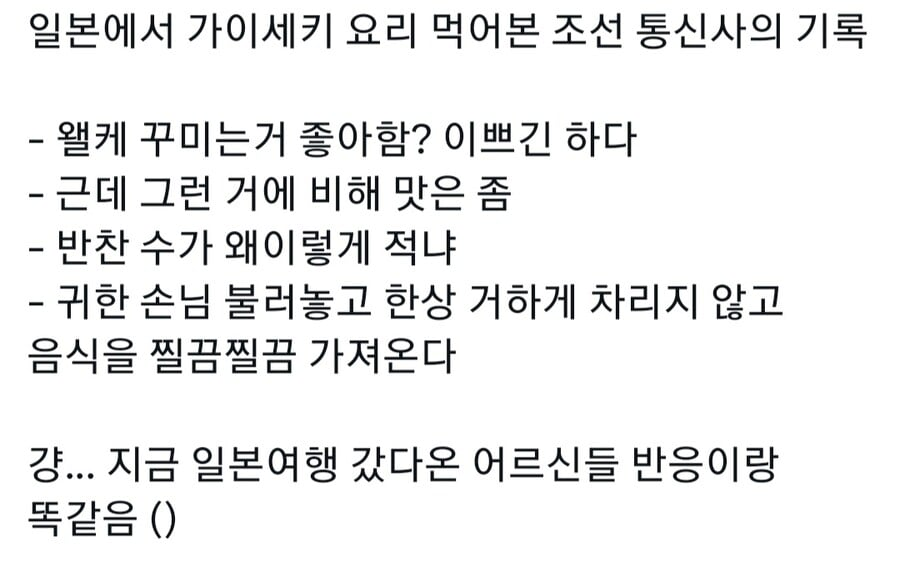
이 템플릿 꽤 오랬동안 돌았는데 그럼 대체 뭘 줬길래?
라는 생각이 듬. 그럼 에도시대 사람들은 뭘 먹은거지?
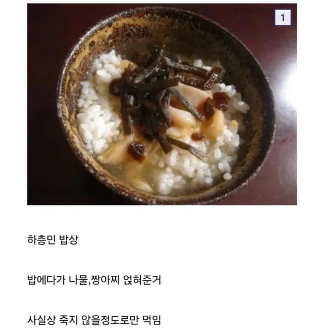
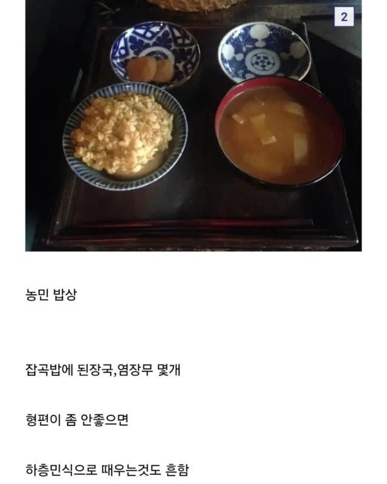
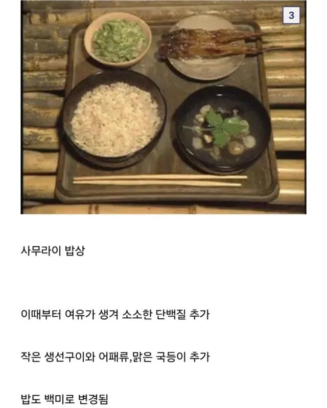
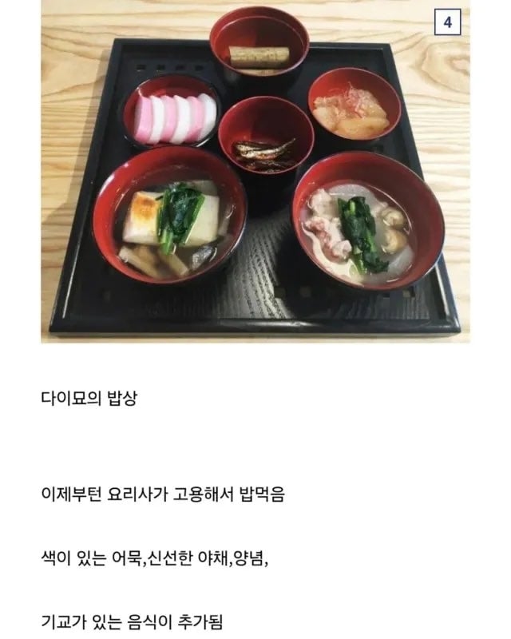
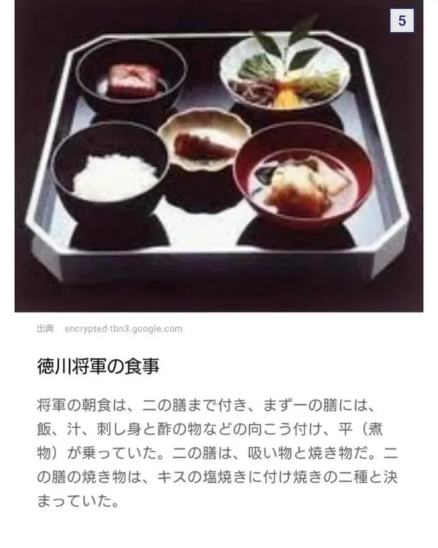
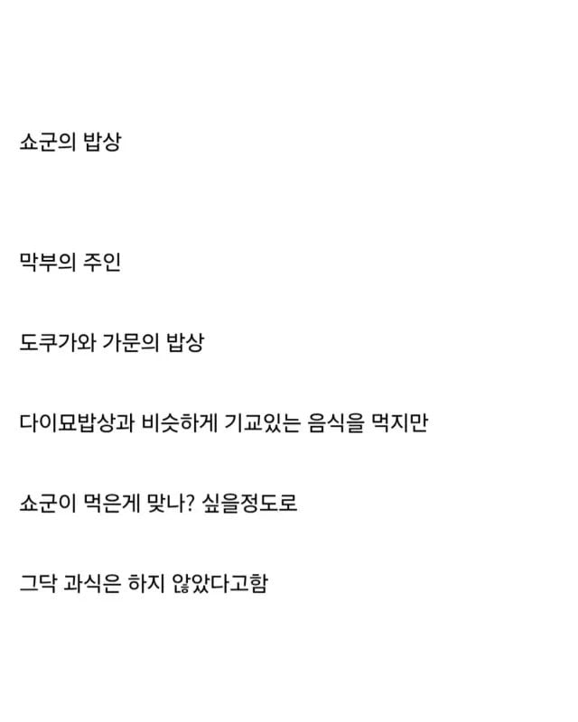
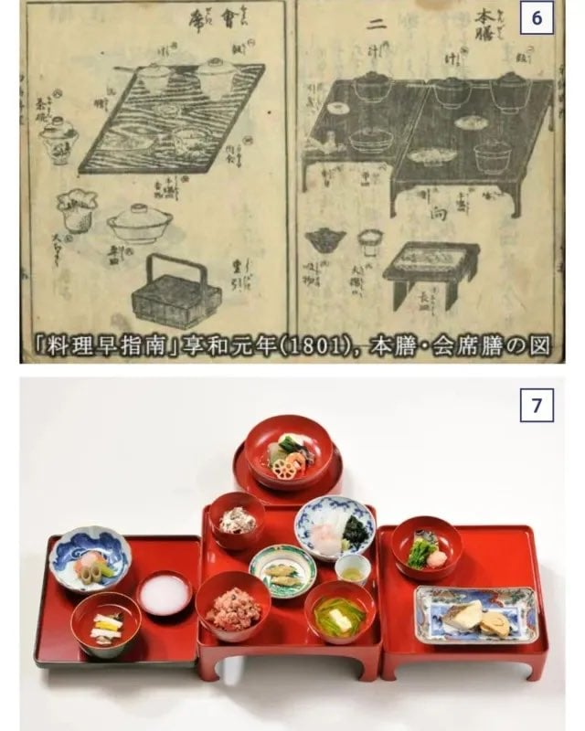
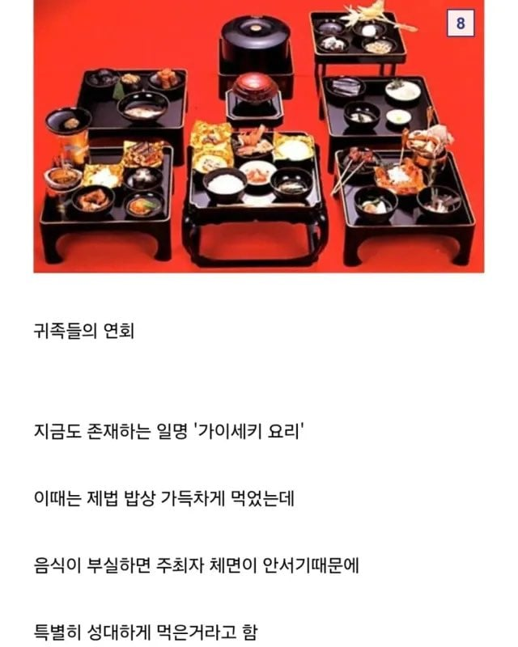
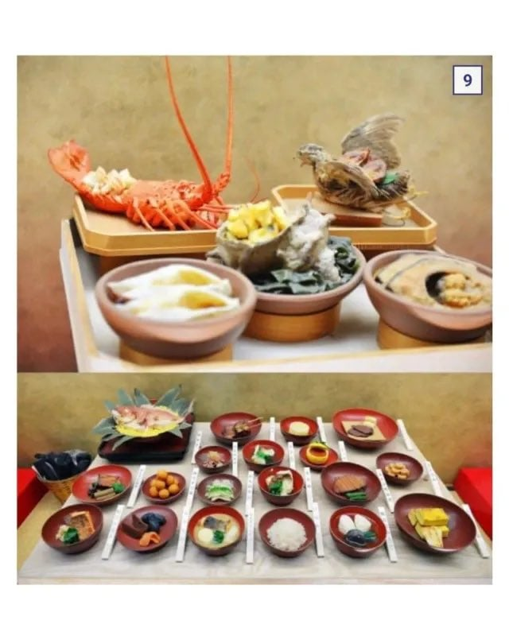
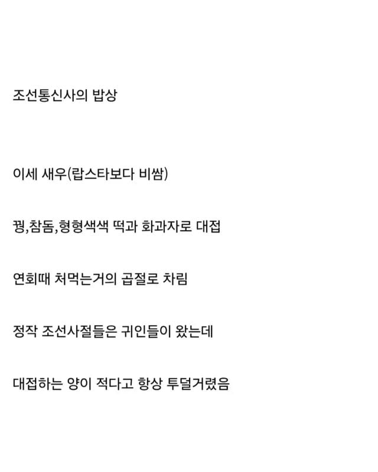
아니 저정도 특식이면 좋은 거 아냐?
또 조선통신사가 오면 고기전문 요리사를 미리 준비해서 통신사들에게만 고기요리를 대접했다는 기록도 있음.. 하... 조선놈들 까다롭네...
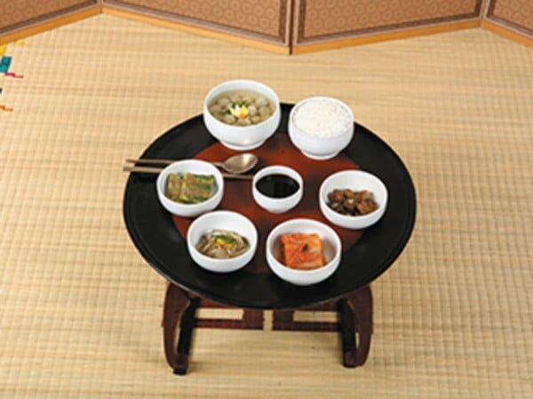
조선 상차림의 제일 기본인 3첩반상.
이미 여기부터 쇼군의 밥상을 압도함
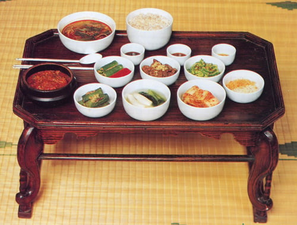
5첩반상. 양반이라면 기본 여기부터임
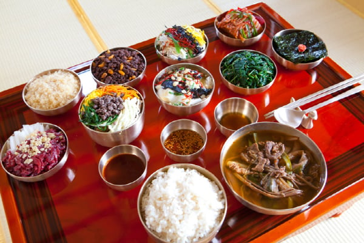
7첩반상
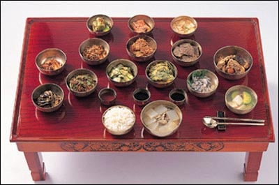
9첩반상
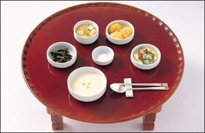
죽상
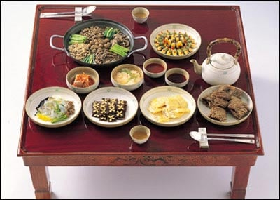
주안상
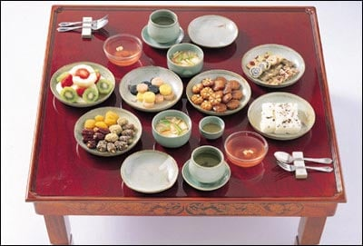
디과상
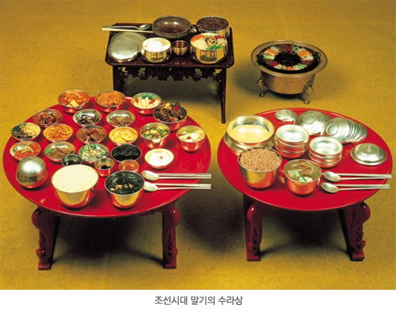
아 먹는 거, 특히 한상가득 푸짐하게 먹는 거에 존나 진심인 양반들에게 저런 상이 통하겠냐고 ㅋㅋㅋㅋ
자존심 채우는건 좋은데 이런 방식은 별로 좋지 못하다